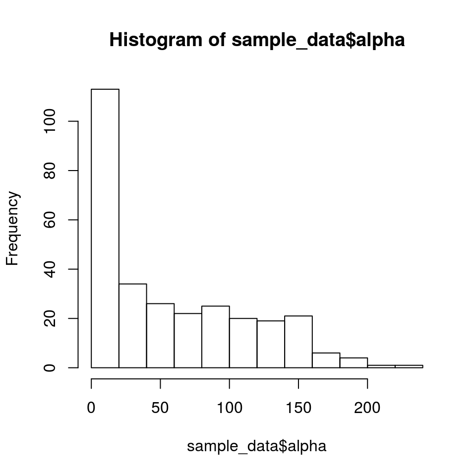
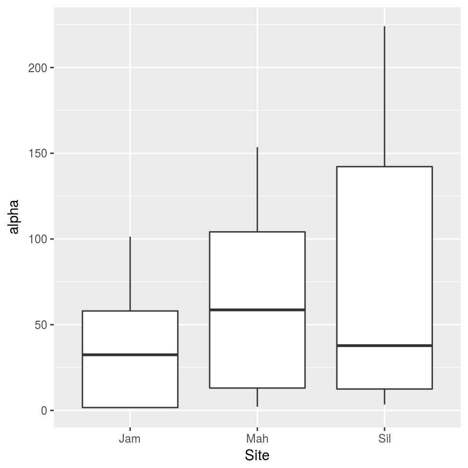
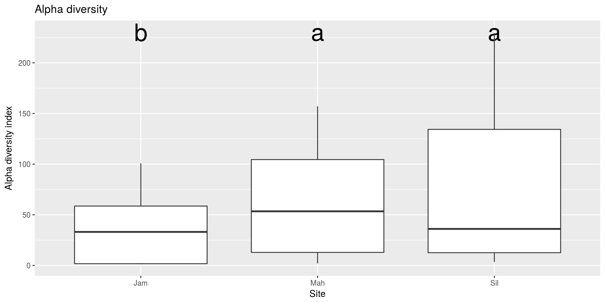
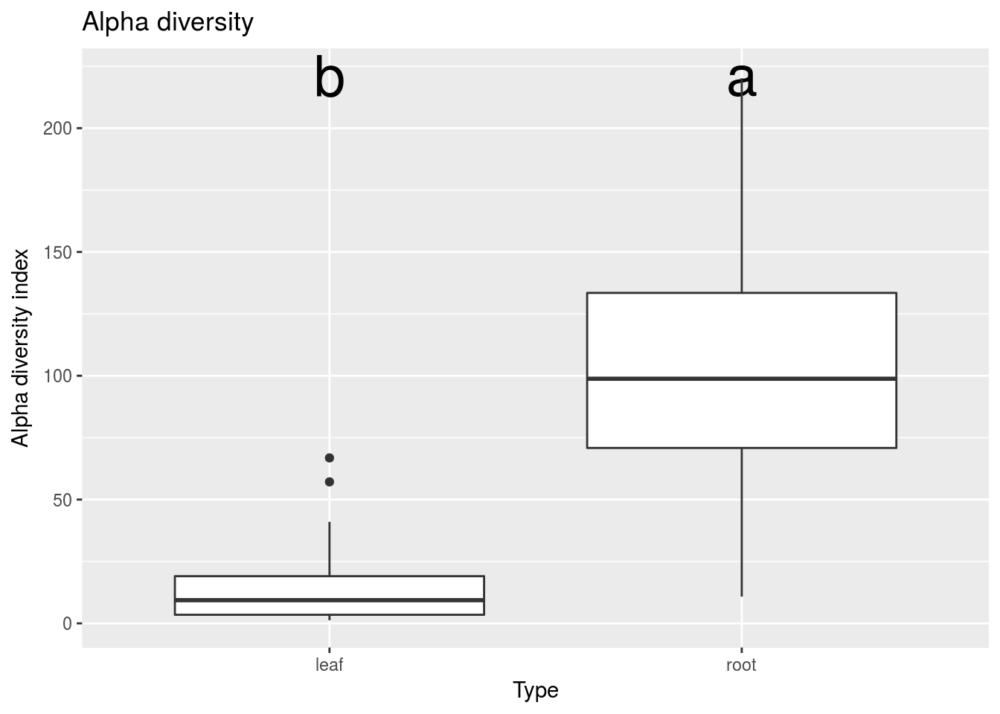
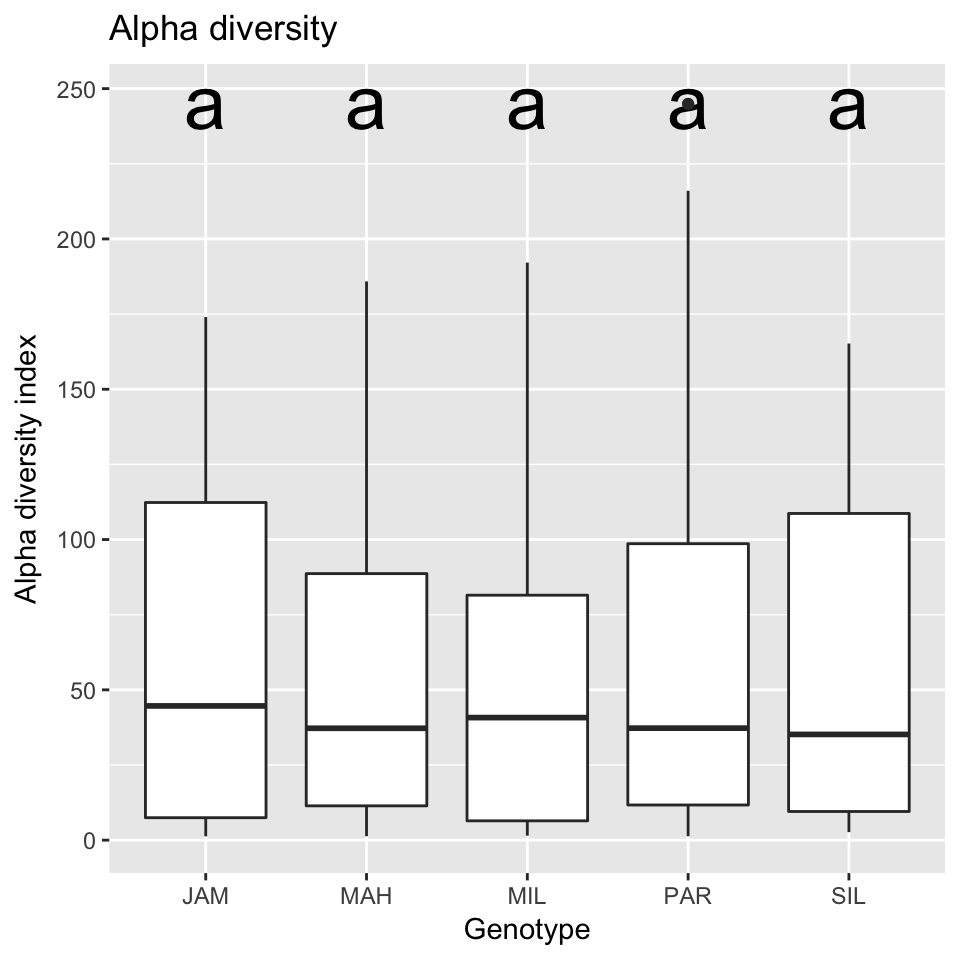
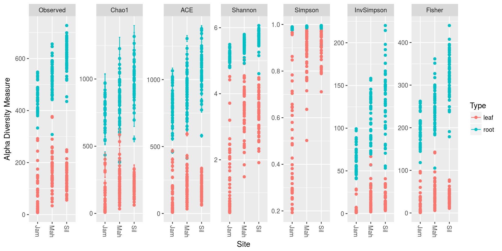
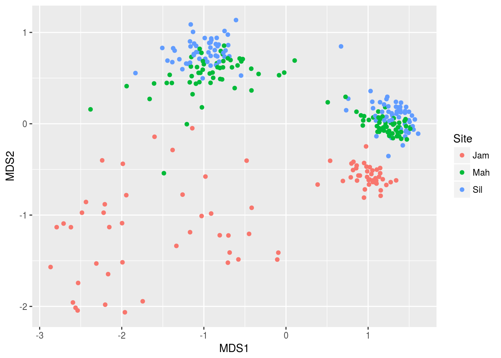
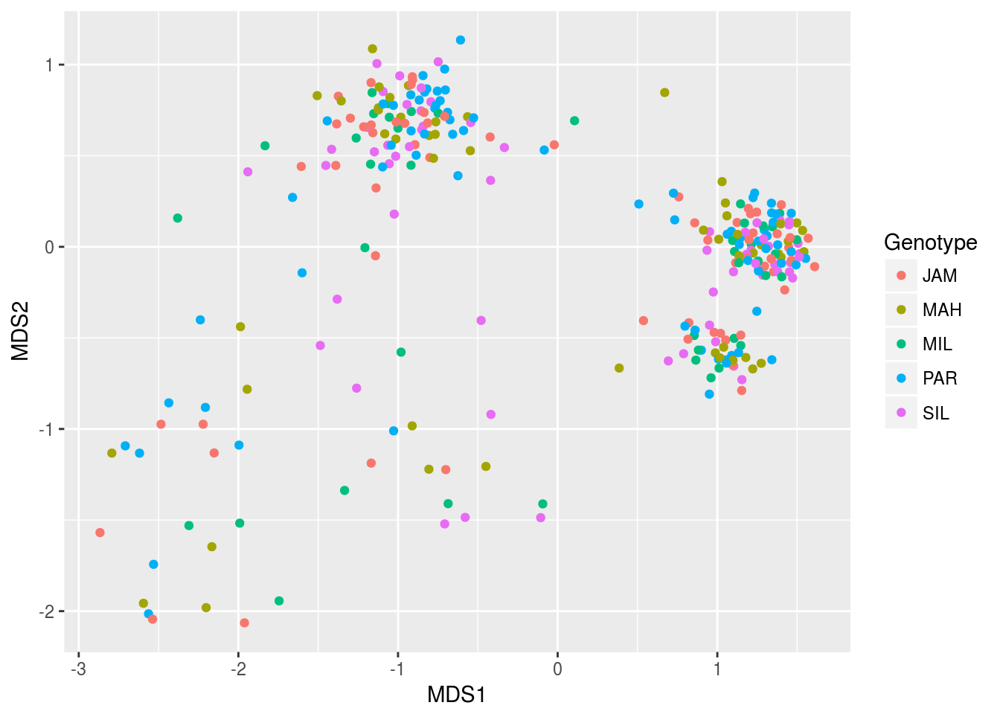
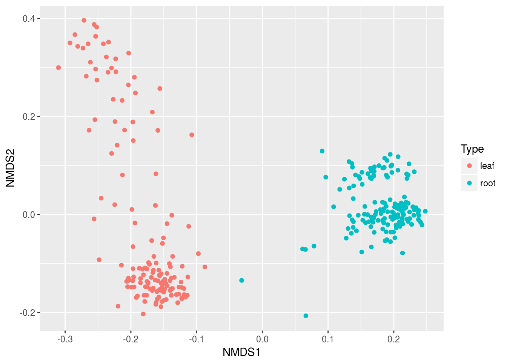

If you are starting the workshop at this section, or had problems running code in a previous section, use the following to load the data used in this section. If obj and sample_data are already in your environment, you can ignore this and proceed.
Diversity in the ecological sense is intuitively understood as the complexity of a community of organisms. There are many ways to quantify this complexity so that we can compare communities objectively. The two main categories of methods are known as alpha diversity and beta diversity (Whittaker 1960). Alpha diversity measures the diversity within a single sample and is generally based on the number and relative abundance of taxa at some rank (e.g. species or OTUs). Beta diversity also uses the number of relative abundance of taxa at some rank, but measures variation between samples. In other words, an alpha diversity statistic describes a single sample and a beta diversity statistic describes how two samples compare.
The vegan package is the main tool set used for calculating biological diversity statistics in R.
Common alpha diversity statistics include:
There are also some diversity indexes that take into account the taxonomic similarity of the species called “taxonomic diversity” and “taxonomic distinctness”, but we will not go into those.
The diversity function from the vegan package can be used to calculate the alpha diversity of a set of samples. Like other vegan functions, it assumes that samples are in rows, but they are in columns in our data, so we need to use the MARGIN = 2 option. We also need to exclude the taxon ID column by subsetting the columns to only samples (i.e. all column besides the first one). Since alpha diversity is a per-sample attribute, we can just add this as a column to the sample data table:
library(vegan)
sample_data$alpha <- diversity(obj$data$otu_rarefied[, sample_data$SampleID],
MARGIN = 2,
index = "invsimpson")
hist(sample_data$alpha)
Adding this as a column to the sample data table makes it easy to graph using ggplot2.

We can use ANOVA to tell if at least one of the diversity means is different from the rest.
## Df Sum Sq Mean Sq F value Pr(>F)
## Site 2 82665 41333 14.8 7.57e-07 ***
## Residuals 289 806886 2792
## ---
## Signif. codes: 0 '***' 0.001 '**' 0.01 '*' 0.05 '.' 0.1 ' ' 1
That tells us that there is a difference, but does not tell us which means are different. A Tukey’s Honest Significant Difference (HSD) test can do pairwise comparisons of the means to find this out. We will use the HSD.test function from the agricolae package since it provides grouping codes that are useful for graphing.
## $statistics
## MSerror Df Mean CV
## 2791.992 289 57.7827 91.44484
##
## $parameters
## test name.t ntr StudentizedRange alpha
## Tukey Site 3 3.33168 0.05
##
## $means
## alpha std r Min Max Q25 Q50 Q75
## Jam 33.00094 31.72510 84 1.270947 100.2952 1.67059 33.57619 59.38898
## Mah 60.77268 48.30861 104 2.052750 148.5312 12.07503 54.93179 107.45515
## Sil 74.80877 68.47679 104 3.471979 244.9356 12.10417 34.59325 144.63457
##
## $comparison
## NULL
##
## $groups
## alpha groups
## Sil 74.80877 a
## Mah 60.77268 a
## Jam 33.00094 b
##
## attr(,"class")
## [1] "group"
Looking at the tukey_result$groups table it appears that the alpha diversity of sites “Sil” and “Mah” might not be different, but there is evidence that the diversity in site “Jam” is lower. We can add this information to the graph using the tukey_result$groups$groups codes:
group_data <- tukey_result$groups[order(rownames(tukey_result$groups)),]
ggplot(sample_data, aes(x = Site, y = alpha)) +
geom_text(data = data.frame(),
aes(x = rownames(group_data), y = max(sample_data$alpha) + 1, label = group_data$groups),
col = 'black',
size = 10) +
geom_boxplot() +
ggtitle("Alpha diversity") +
xlab("Site") +
ylab("Alpha diversity index")
So that takes care of comparing the alpha diversity of sites, but there are other interesting grouping we can compare, such as the genotype and the type of the sample (roots vs leaves). We could do the above all over with minor modifications, but one of the benefits of using a programming language is that you can create your own functions to automate repeated tasks. We can generalize what we did above and put it in a function like so:
compare_alpha <- function(sample_data, grouping_var) {
# Calcuate alpha diversity
sample_data$alpha <- diversity(obj$data$otu_rarefied[, sample_data$SampleID],
MARGIN = 2,
index = "invsimpson")
# Do ANOVA
sample_data$grouping <- sample_data[[grouping_var]] # needed for how `aov` works
anova_result <- aov(alpha ~ grouping, sample_data)
# Do Tukey's HSD test
tukey_result <- HSD.test(anova_result, "grouping", group = TRUE)
# Plot result
group_data <- tukey_result$groups[order(rownames(tukey_result$groups)),]
my_plot <- ggplot(sample_data, aes(x = grouping, y = alpha)) +
geom_text(data = data.frame(),
aes(x = rownames(group_data),
y = max(sample_data$alpha) + 1,
label = group_data$groups),
col = 'black',
size = 10) +
geom_boxplot() +
ggtitle("Alpha diversity") +
xlab(grouping_var) +
ylab("Alpha diversity index")
# Return plot
return(my_plot)
}Using this function, we can compare plot the alpha diversities by type of sample and genotype:


Looks like there is no difference in the alpha diversity between genotypes, but a large difference between the diversity of roots and leaves.
The phyloseq package (McMurdie and Holmes (2013)) can be used to quickly plot a variety of alpha diversity indexes per sample using the plot_richness function. First we need to convert the taxmap object to a phyloseq object, since all of the phyloseq functions expect phyloseq objects.
##
## Attaching package: 'phyloseq'## The following object is masked from 'package:taxa':
##
## filter_taxalibrary(metacoder)
ps_obj <- as_phyloseq(obj,
otu_table = "otu_rarefied",
otu_id_col = "OTU_ID",
sample_data = sample_data,
sample_id_col = "SampleID")
plot_richness(ps_obj, color = "Type", x = "Site")
Each dot is a sample and the error bars in some of the indexes are the standard error.
Beta diversity is a way to quantify the difference between two communities. There are many metrics that are used for this, but we will only mention a few of the more popular ones. A few also incorporate phylogenetic relatedness and require a phylogentic tree of the organisms in either community to be calculated.
The vegan function vegdist is used to calculate the pairwise beta diversity indexes for a set of samples. Since this is a pairwise comparison, the output is a triangular matrix. In R, a matrix is like a data.frame, but all of the same type (e.g. all numeric), and has some different behavior.
Since vegdist does not have a MARGIN option like diversity, we need to transpose the matrix with the t function.
Ordination is a way to display “high dimensional” data in a viable number of dimensions (2 to 3). Our data is “high dimensional” because we have many samples with many species and species can be considered a “dimension”. If we had only two species, we could make a scatter plot of their abundance in each sample and get an idea of how the samples differ. With thousands of species, this is not possible. Instead, ordination is used to try to capture the information in many dimensions by in a smaller number of new dimensions.
## Square root transformation
## Wisconsin double standardization
## Run 0 stress 0.08393171
## Run 1 stress 0.1215783
## Run 2 stress 0.1042401
## Run 3 stress 0.09352817
## Run 4 stress 0.09074972
## Run 5 stress 0.1175892
## Run 6 stress 0.1009062
## Run 7 stress 0.09941183
## Run 8 stress 0.09357209
## Run 9 stress 0.1160378
## Run 10 stress 0.1243481
## Run 11 stress 0.09712008
## Run 12 stress 0.1059878
## Run 13 stress 0.1154871
## Run 14 stress 0.1254878
## Run 15 stress 0.09581018
## Run 16 stress 0.1119667
## Run 17 stress 0.08486114
## Run 18 stress 0.1025586
## Run 19 stress 0.1147969
## Run 20 stress 0.1142336
## *** No convergence -- monoMDS stopping criteria:
## 15: stress ratio > sratmax
## 5: scale factor of the gradient < sfgrmin
library(ggplot2)
mds_data <- as.data.frame(mds$points)
mds_data$SampleID <- rownames(mds_data)
mds_data <- dplyr::left_join(mds_data, sample_data)## Joining, by = "SampleID"Now that we have the data in a format plotting2 likes, we can plot it. Lets plot our two new dimensions and color them by sample type (i.e. leaves vs roots).

This shows that leaf and root samples are quite distinct, as we would expect. We can also color them by Site:

It appears that within the leaf and root clusters, we “sub-clusters” corresponding to site. Finally, lets look at genotype:
There is no decernable pattern there, suggesting plant genotype does not correspond to community structure.
We can also do the above quickly in phyloseq using the ordinate and plot_ordination functions. Lets look at the differences between leaf and root samples again, but using a difference index this time.
## Run 0 stress 0.1071796
## Run 1 stress 0.1079047
## Run 2 stress 0.1071772
## ... New best solution
## ... Procrustes: rmse 0.0001583033 max resid 0.002428048
## ... Similar to previous best
## Run 3 stress 0.1079128
## Run 4 stress 0.1236617
## Run 5 stress 0.1069452
## ... New best solution
## ... Procrustes: rmse 0.004973089 max resid 0.08432136
## Run 6 stress 0.1077278
## Run 7 stress 0.1077271
## Run 8 stress 0.1071776
## ... Procrustes: rmse 0.00497448 max resid 0.08437457
## Run 9 stress 0.1069459
## ... Procrustes: rmse 7.573203e-05 max resid 0.0009419793
## ... Similar to previous best
## Run 10 stress 0.1097236
## Run 11 stress 0.1135039
## Run 12 stress 0.1071277
## ... Procrustes: rmse 0.001499037 max resid 0.02503174
## Run 13 stress 0.1094704
## Run 14 stress 0.1097231
## Run 15 stress 0.1069452
## ... Procrustes: rmse 3.58559e-05 max resid 0.0004109271
## ... Similar to previous best
## Run 16 stress 0.1092814
## Run 17 stress 0.1071765
## ... Procrustes: rmse 0.004972287 max resid 0.08437637
## Run 18 stress 0.1071767
## ... Procrustes: rmse 0.00497537 max resid 0.08438539
## Run 19 stress 0.1069454
## ... Procrustes: rmse 6.823349e-05 max resid 0.0007509618
## ... Similar to previous best
## Run 20 stress 0.1077286
## *** Solution reached

1a) Look at the documentation for the plot_richness function from phyloseq. Try to make a plot using only the Simpson and inverse Simpson indexes, colored by site and split up by sample type (leaf vs root).
1b) The Simpson and inverse Simpson indexes display the same information in different ways (if you know one, you can calculate the other). How do they differ?
McMurdie, Paul J, and Susan Holmes. 2013. “Phyloseq: An R Package for Reproducible Interactive Analysis and Graphics of Microbiome Census Data.” PloS One 8 (4). Public Library of Science: e61217. https://doi.org/10.1371/journal.pone.0061217.
Whittaker, Robert Harding. 1960. “Vegetation of the Siskiyou Mountains, Oregon and California.” Ecological Monographs 30 (3). Wiley Online Library: 279–338.